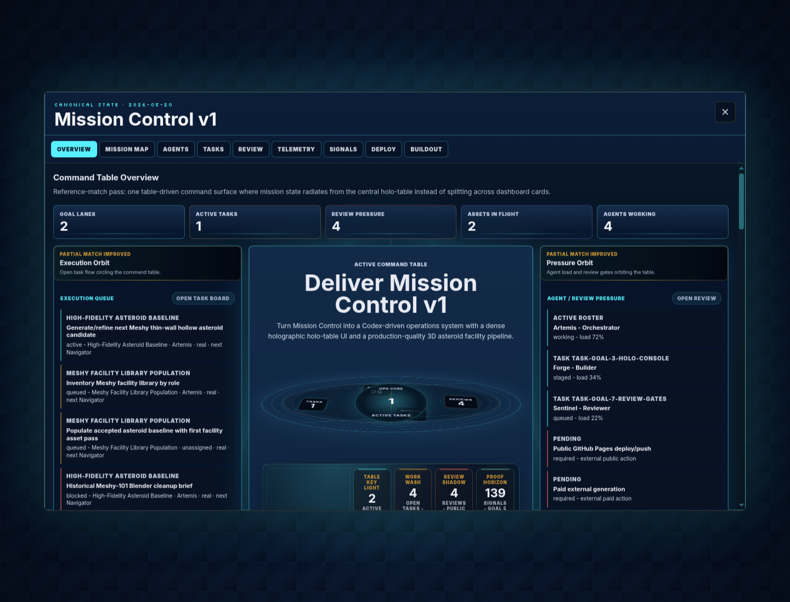

Reference direction
Holographic command-table moodboard: central table as hero object, projected operational data, fine-line depth, asymmetric composition, and cinematic command-room contrast.

Goal 5 / Holo-table overlay
Holographic command-table moodboard: central table as hero object, projected operational data, fine-line depth, asymmetric composition, and cinematic command-room contrast.
Current overlay-only capture from ?overlay=1&console=overview. The table, asymmetric vector, and command-room light field are present, but the matrix still calls this partial.

Oval table, instrument pods, asymmetric vector, and light field now read as one command object. Still needs stronger full-room composition.
Execution, pressure, and evidence orbit the table, but the surrounding bands still need a larger asymmetric composition.
Fine-line grid, depth rings, contrast rails, and light field are present. Lighting continuity needs another authored pass.
Goal, task, review, event, artifact, and telemetry signals remain visible without fake backend actions. Scan order is better, not finished.
Fresh desktop/mobile proof is captured after the light-field pass. Repeat proof remains required for future visual claims.
Board compares moodboard, updated overlay capture, and all five zone verdicts in one artifact.
No reference-complete claim. This is evidence for the next composition pass.
Bring the surrounding bands and lighting into a stronger command-room read around the table.